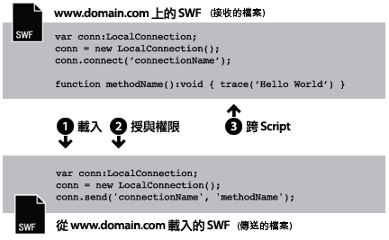
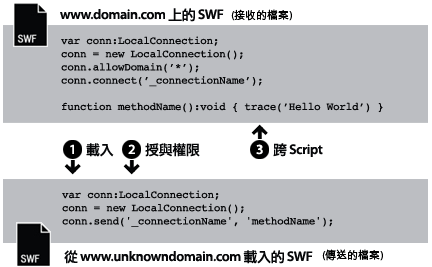
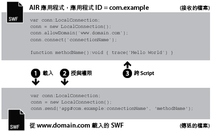
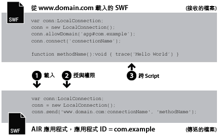

| 套件 | flash.net |
| 類別 | public class LocalConnection |
| 繼承 | LocalConnection |
| 語言版本: | ActionScript 3.0 |
| 執行階段版本: | AIR 1.0, Flash Player 9, Flash Lite 4 |
- 在單一 SWF 檔中
- 在多個 SWF 檔之間
- 在 AIR 應用程式的內容 (SWF 類型或 HTML 類型) 之間
- 在 AIR 應用程式中的內容 (SWF 類型或 HTML 類型) 和在瀏覽器中執行的 SWF 內容之間
AIR 描述檔支援：所有桌上型電腦作業系統與所有 AIR for TV 裝置都支援此項功能，但行動裝置不支援。您可以使用 LocalConnection.isSupported 屬性測試執行階段的支援狀況。如需有關跨多個描述檔之 API 支援的詳細資訊，請參閱 AIR 描述檔支援。
注意：AIR for TV 裝置僅支援 AIR 應用程式中 SWF 內容之間的通訊。
本機連線會在 SWF 檔之間啟用這種通訊類型，而不使用 fscommand() 或 JavaScript。 LocalConnection 物件只能讓在相同用戶端電腦上執行的檔案彼此通訊，但它們可以在不同的應用程式中執行，例如，在瀏覽器中執行的檔案和在 Adobe AIR 中執行的 SWF 檔。
ActionScript 3.0 中建立的 LocalConnection 物件可以與 ActionScript 1.0 或 2.0 中建立的 LocalConnection 物件通訊。 反之亦然： ActionScript 1.0 或 2.0 中建立的 LocalConnection 物件可以與 ActionScript 3.0 中建立的 LocalConnection 物件通訊。 Flash Player 會在不同版本的 LocalConnection 物件之間，自動處理這項通訊。
有三種方式可將回呼方法加入 LocalConnection 物件：
- 讓 LocalConnection 類別成為子類別，再加入方法。
- 將
LocalConnection.client屬性設成實作這些方法的物件。 - 建立會擴充 LocalConnection 的動態類別，再以動態方式加入方法。
若要了解如何使用 LocalConnection 物件實作兩個 檔之間的通訊，識別每個檔案中使用的命令會很有用。 其中一個檔稱為「接收端」檔，是包含要叫用之方法的檔案。接收端檔必須包含 LocalConnection 物件並呼叫 connect() 方法。另一個檔稱為「傳送端」檔，是會叫用方法的檔案。傳送端檔必須包含另一個 LocalConnection 物件以及 send() 方法的呼叫。
send() 和 connect() 的使用方式會因這些 檔位於相同網域中、位於可預測網域名稱的不同網域中，或位於不可預測或動態網域名稱的不同網域中而不同。 以下段落將說明這三種不同的情況，並針對每種情況提供程式碼樣本。
相同網域： 這是使用 LocalConnection 物件最簡單的方式 (僅允許位於相同網域中的 LocalConnection 物件之間進行通訊)，因為預設就會允許相同網域的通訊。當相同網域的兩個 檔進行通訊時，您不需要實作任何特殊安全性措施，而且您只要將相同的 connectionName 參數值同時傳遞給 connect() 和 send() 方法即可：

// receivingLC is in http://www.domain.com/receiving.swf
receivingLC.connect('myConnection');
// sendingLC is in http://www.domain.com/sending.swf
// myMethod() is defined in sending.swf
sendingLC.send('myConnection', 'myMethod');
可預測網域名稱的不同網域： 當不同網域的兩個 SWF 檔進行通訊時，您必須呼叫 allowDomain() 方法，允許兩個網域之間的通訊。 此外，您也必須使用接收端 LocalConnection 物件的網域名稱，在 send() 方法中限定連線名稱：

// receivingLC is in http://www.domain.com/receiving.swf
receivingLC.allowDomain('www.anotherdomain.com');
receivingLC.connect('myConnection');
// sendingLC is in http://www.anotherdomain.com/sending.swf
sendingLC.send('www.domain.com:myConnection', 'myMethod');
不可預測網域名稱的不同網域： 有時候，您會希望讓具有接收端 LocalConnection 物件的 檔更容易在不同網域之間傳送。 若要避免在 send() 方法中指定網域名稱，但又要指示接收端和傳送端 LocalConnection 物件分別位於不同的網域中，請在 connect() 和 send() 呼叫的連線名稱前面都加上底線 (_)。若要允許兩個網域之間的通訊，請呼叫 allowDomain() 方法，並傳遞您想要允許 LocalConnection 呼叫的網域。 或者，您也可以傳遞萬用字元 (*) 引數，允許來自所有網域的呼叫：

// receivingLC is in http://www.domain.com/receiving.swf
receivingLC.allowDomain('*');
receivingLC.connect('_myConnection');
// sendingLC is in http://www.anotherdomain.com/sending.swf
sendingLC.send('_myConnection', 'myMethod');
從 Flash Player 到 AIR 應用程式。在 AIR 應用程式安全執行程序中建立的 LocalConnection 物件使用特殊的字串，而非網域名稱做為其連線前置詞。這個字串具有 app#appID.pubID 的格式，其中 appID 是應用程式 ID，而 pubID 則是應用程式的發行者 ID。(如果 AIR 應用程式使用發行者 ID，則只會包括該發行者 ID)。例如，如果 AIR 應用程式具有 "com.example" 的應用程式 ID，但沒有發行者 ID，則可以使用：app#com.example:myConnection 做為本機連線字串。AIR 應用程式也必須呼叫 allowDomain() 方法，以傳入呼叫 SWF 檔案的來源網域：

// receivingLC is an AIR application with app ID = com.example (and no publisher ID)
receivingLC.allowDomain('www.domain.com');
receivingLC.connect('myConnection');
// sendingLC is in http://www.domain.com/sending.swf
sendingLC.send('app#com.example:myConnection', 'myMethod');
注意：如果 AIR 應用程式在 AIR 應用程式安全執行程序的外面載入 SWF，則與 SWF 建立本機連線的規則，和在 Flash Player 中執行的 SWF 建立連線的規則相同。
從 AIR 應用程式到 Flash Player。當 AIR 應用程式與在 Flash Player 執行階段中執行的 SWF 通訊時，您需要呼叫 allowDomain() 方法，並傳入 AIR 應用程式的連線前置詞，以允許這兩者之間的通訊。例如，如果 AIR 應用程式具有 "com.example" 的應用程式 ID，但沒有發行者 ID，則可以將 app#com.example 字串傳遞至 allowDomain() 方法。此外，您也必須使用接收 LocalConnection 物件的網域名稱，在 send() 方法中限定連線名稱 (使用 "localhost" 做為從本機檔案系統載入 SWF 檔案的網域)：

// receivingLC is in http://www.domain.com/receiving.swf
receivingLC.allowDomain('app#com.example');
receivingLC.connect('myConnection');
// sendingLC is an AIR application with app ID = com.example (and no publisher ID)
sendingLC.send('www.domain.com:myConnection', 'myMethod');
從 AIR 應用程式到其他 AIR 應用程式。若要在兩個 AIR 應用程式之間通訊，您需要呼叫 allowDomain() 方法，並傳入傳送 AIR 應用程式的連線前置詞，以允許這兩者之間的通訊。例如，如果傳送應用程式具有 "com.example" 的應用程式 ID，但沒有發行者 ID，則可以將 app#com.example 字串傳遞至接收應用程式的 allowDomain() 方法。此外，您也必須使用接收 LocalConnection 物件的連線前置詞，在 send() 方法中限定連線名稱：

// receivingLC is an AIR application with app ID = com.sample (and no publisher ID)
receivingLC.allowDomain('app#com.example');
receivingLC.connect('myConnection');
// sendingLC is an AIR application with app ID = com.example (and no publisher ID)
sendingLC.send('app#com.sample:myConnection', 'myMethod');
您可以使用 LocalConnection 物件，傳送和接收單一 檔中的資料，不過這並非一般的實作方式。
如需 send() 和 connect() 方法的詳細資訊，請參閱 LocalConnection.send() 和 LocalConnection.connect() 項目中有關 connectionName 參數的討論， 以及 allowDomain() 和 domain 項目。
相關 API 元素
flash.net.LocalConnection.allowDomain()
flash.net.LocalConnection.domain
 隱藏繼承公用屬性
隱藏繼承公用屬性 顯示繼承公用屬性
顯示繼承公用屬性| 屬性 | 定義自 | ||
|---|---|---|---|
| client : Object
指出要針對其叫用回呼方法的物件。 | LocalConnection | ||
 | constructor : Object
類別物件的參照或是特定物件實體的建構函數。 | Object | |
| domain : String [唯讀]
字串，代表目前 檔所在位置的網域。 | LocalConnection | ||
| isPerUser : Boolean
表示 LocalConnection 物件僅限為目前使用者 (true)，或電腦上所有使用者都能存取 (false)。 | LocalConnection | ||
| isSupported : Boolean [靜態] [唯讀]
如果目前的平台支援 LocalConnection 類別，則 isSupported 屬性會設定為 true，否則會設定為 false。 | LocalConnection | ||
| 方法 | 定義自 | ||
|---|---|---|---|
建立 LocalConnection 物件。 | LocalConnection | ||
| addEventListener(type:String, listener:Function, useCapture:Boolean = false, priority:int = 0, useWeakReference:Boolean = false):void
會在 EventDispatcher 物件註冊事件偵聽程式，以便讓偵聽程式收到事件的通知。 | EventDispatcher | |
會指定一個或多個可傳送 LocalConnection 呼叫至此 LocalConnection 實體的網域。 | LocalConnection | ||
會指定一個或多個可傳送 LocalConnection 呼叫至此 LocalConnection 物件的網域。 | LocalConnection | ||
關閉 (離線) LocalConnection 物件。 | LocalConnection | ||
準備 LocalConnection 物件，以便接收從 send() 命令 (從「傳送端 LocalConnection 物件」) 傳送的命令。 | LocalConnection | ||
|
會將事件傳送到事件流程。 | EventDispatcher | |
|
會檢查 EventDispatcher 物件是否有對特定的事件類型註冊偵聽程式。 | EventDispatcher | |
|
指出物件是否有已定義的指定屬性。 | Object | |
|
指出 Object 類別的實體是否位於指定為參數的物件原型鏈中。 | Object | |
|
指出指定的屬性是否存在，以及是否可列舉。 | Object | |
|
會從 EventDispatcher 物件移除偵聽程式。 | EventDispatcher | |
會針對使用 connect( connectionName ) 方法 (在接收端 LocalConnection 物件中) 開啟的連線叫用名為 methodName 的方法。 | LocalConnection | ||
|
為迴圈作業設定動態屬性的可用性。 | Object | |
|
傳回代表此物件的字串，根據地區特定慣例進行格式化。 | Object | |
|
會傳回指定之物件的字串形式。 | Object | |
|
會傳回指定之物件的基本值。 | Object | |
|
檢查此 EventDispatcher 物件是否已註冊事件偵聽程式，或者此物件的任何祖系已為特定事件類型註冊事件偵聽程式。 | EventDispatcher | |
| 事件 | 摘要 | 定義自 | ||
|---|---|---|---|---|
| [廣播事件] 當 Flash Player 或 AIR 應用程式取得作業系統焦點並成為作用中時傳送。 | EventDispatcher | ||
| 會在以非同步方式 (亦即，從原生非同步程式碼) 擲出例外時傳送。 | LocalConnection | |||
| [廣播事件] 當 Flash Player 或 AIR 應用程式失去作業系統焦點並成為非作用中時傳送。 | EventDispatcher | ||
| 在 LocalConnection.send() 的呼叫嘗試將資料傳送至不同的安全執行程序時傳送。 | LocalConnection | |||
| 在 LocalConnection 物件回報其狀態時傳送。 | LocalConnection | |||
client | 屬性 |
domain | 屬性 |
domain:String [唯讀] | 語言版本: | ActionScript 3.0 |
| 執行階段版本: | AIR 1.0, Flash Player 9, Flash Lite 4 |
字串，代表目前 檔所在位置的網域。
在 Adobe AIR 的 application 安全執行程序中執行的內容中 (使用 AIR 應用程式所安裝的內容)，執行階段會使用字串 app#，後面跟著 AIR 應用程式的應用程式 ID (在應用程式描述器檔案中定義)，以取代父網域。例如，對於具有應用程式 ID com.example.air.MyApp 之應用程式的 connectionName，connectionName 會解析為 "app#com.example.air.MyApp:connectionName"。
在發佈為 Flash Player 9 或更新版本的 SWF 檔中，傳回的字串就是檔案的確切網域 (包括子網域)。例如，假設該 檔位於 www.adobe.com，則這個命令將會傳回 "www.adobe.com"。
如果目前的檔案是用戶端電腦上 Flash Player 中執行的本機檔案，則這個命令將會傳回 "localhost"。
使用這個屬性最常見的方式，就是包含傳送端 LocalConnection 物件的網域名稱，將它做為您打算在接收端 LocalConnection 物件中叫用之方法的參數，或搭配 LocalConnection.allowDomain() 以接受指定網域的命令。 如果您只要啟用位於相同網域之 LocalConnection 物件之間的通訊，可能就不需要使用這個屬性。
實作
public function get domain():String相關 API 元素
isPerUser | 屬性 |
isPerUser:Boolean| 語言版本: | ActionScript 3.0 |
| 執行階段版本: | Flash Player 10.0.32, AIR 1.5.2 |
表示 LocalConnection 物件僅限為目前使用者 (true)，或電腦上所有使用者都能存取 (false)。這個屬性只影響在 Mac OS X 上執行的內容；其他平台會忽略這個參數。在 Windows 及 Linux 作業系統上的連線一律都是以個別使用者而定。
在 Flash Player 10.0.22 及其更早版本，和在 AIR 1.5.1 及其更早版本中，所有在 Mac OS X 上的 LocalConnection 物件具有全域範圍。一律設定這個屬性為 true，除非您需要保有與舊版的相容性。在未來版本中，這個屬性的預設值可能變更為 true。
預設值為 false。
實作
public function get isPerUser():Boolean public function set isPerUser(value:Boolean):voidisSupported | 屬性 |
LocalConnection | () | 建構函式 |
public function LocalConnection()| 語言版本: | ActionScript 3.0 |
| 執行階段版本: | AIR 1.0, Flash Player 9, Flash Lite 4 |
建立 LocalConnection 物件。 您可以使用 LocalConnection 物件，啟用在相同用戶端電腦上執行之不同 檔之間的通訊。
相關 API 元素
allowDomain | () | 方法 |
public function allowDomain(... domains):void| 語言版本: | ActionScript 3.0 |
| 執行階段版本: | AIR 1.0, Flash Player 9, Flash Lite 4 |
會指定一個或多個可傳送 LocalConnection 呼叫至此 LocalConnection 實體的網域。
您無法使用此方法讓安全通訊協定 (HTTPS) 裝載的 檔允許由非安全通訊協定裝載的 檔來存取，而是必須改用 allowInsecureDomain() 方法。
為了讓不同網域中的子系 檔可以對父輩 檔進行 LocalConnection 呼叫，而不需知道子系 檔實際來自哪一個網域，您就可以使用這個方法。 例如，當您使用負載平衡重新導向或協力廠商伺服器時，就可能會發生這種情況。 在這種情況下，您可以使用處理該負載所用之 LoaderInfo 物件的 url 屬性，來取得要在 allowDomain() 方法中使用的網域。 例如，如果您使用 Loader 物件載入子系 檔，則在檔案載入之後，即可檢查 Loader 物件的 contentLoaderInfo.url 屬性，並從完整的 URL 字串中剖析出網域。 如果您要這麼做，請確定 檔已載入後再進行，因為 contentLoaderInfo.url 屬性必須等到檔案完全載入後才會取得其最終的正確值。
此外，相反地情況也可能發生：您可以建立子系 檔接受來自其父輩的 LocalConnection 呼叫，但是卻不知道父輩的網域。 在這種情況下，請檢查網域引數是否與所載入 檔中 loaderInfo.url 屬性的網域相符，以實作此方法。 在這裡，您同樣必須從 loaderInfo.url 包含的完整 URL 中剖析出網域。 在這種情況下，您不需等候父輩 檔載入；在載入子系檔案之前，就已經載入父輩檔案。
使用此方法時，必須顧及 Flash Player 安全性模型。 根據預設， 檔所建立的 LocalConnection 物件會與該 檔的安全執行程序產生關聯，因此除非您呼叫 LocalConnection.allowDomain() 方法，否則不允許跨網域呼叫 LocalConnection 物件。但在 Adobe AIR 中，application 安全執行程序中的內容 (使用 AIR 應用程式所安裝的內容) 沒有這些安全性限制。
如需安全性詳細資訊，請參閱「Flash Player 開發人員中心」主題：安全性。
注意：allowDomain() 方法的格式已變更，與 ActionScript 1.0 和 2.0 中的格式不同。在這些舊版本中，allowDomain 是您所實作的回呼方法。 在 ActionScript 3.0 中，allowDomain() 則是您呼叫之 LocalConnection 的內建方法。 透過這項變更，allowDomain() 的運作方式與 flash.system.Security.allowDomain() 便很相似。
參數
... domains — 一個或多個字串，為您想要允許 LocalConnection 呼叫的網域加以命名。 這個參數具有兩種特殊案例：
|
擲回值
ArgumentError — 所有指定的參數都必須是非 null 字串。
|
相關 API 元素
allowInsecureDomain | () | 方法 |
public function allowInsecureDomain(... domains):void| 語言版本: | ActionScript 3.0 |
| 執行階段版本: | AIR 1.0, Flash Player 9, Flash Lite 4 |
會指定一個或多個可傳送 LocalConnection 呼叫至此 LocalConnection 物件的網域。
allowInsecureDomain() 方法的運作方式就如同 allowDomain() 方法，不過 allowInsecureDomain() 方法會另外允許非 HTTPS 來源的 檔將 LocalConnection 呼叫傳送至 HTTPS 來源的 SWF 檔。 只有當您從使用 HTTPS 載入的 檔呼叫 allowInsecureDomain() 方法時，這項差異才有意義。 即使您要跨越相同網域內的非 HTTPS/HTTPS 界線，還是必須呼叫 allowInsecureDomain() 方法。根據預設，系統永遠不允許 LocalConnection 呼叫從非 HTTPS 檔傳送至 HTTPS 檔，即使在相同網域內也一樣。
呼叫 allowInsecureDomain() 並非建議的方式，因為它可能會危害 HTTPS 提供的安全性。 當您透過 HTTPS 載入檔案時，可以理所當然地確定檔案不會在透過網路傳遞期間遭竄改。如果您之後允許非 HTTPS 的 檔對 HTTPS 的 檔進行 LocalConnection 呼叫，就表示您接受可能已經在傳遞期間遭竄改之 檔的呼叫。 因為您無法信任送達至 HTTPS 檔之 LocalConnection 呼叫的可靠性，所以通常必須特別留意這一點。
根據預設，位於使用 HTTPS 通訊協定網域中的檔案只能讓其他位於使用 HTTPS 通訊協定網域中的檔案來存取。這種實作方式保留了 HTTPS 通訊協定所提供的完整性。
我們不建議您使用這個方法覆寫預設的行為，因為這將會危害 HTTPS 的安全性。 然而，如果您需要允許發佈為 Flash Player 6 或更早版本的 HTTP SWF 檔存取發佈為 Flash Player 9 或更新版本的 HTTPS SWF 檔，您可能就有必要這麼做。
如需安全性詳細資訊，請參閱「Flash Player 開發人員中心」主題：安全性。
參數
... domains — 一個或多個字串，為您想要允許 LocalConnection 呼叫的網域加以命名。 這個參數具有兩種特殊案例：
|
擲回值
ArgumentError — 所有指定的參數都必須是非 null 字串。
|
相關 API 元素
close | () | 方法 |
public function close():void| 語言版本: | ActionScript 3.0 |
| 執行階段版本: | AIR 1.0, Flash Player 9, Flash Lite 4 |
關閉 (離線) LocalConnection 物件。 當您不想再讓物件接受命令時，請發佈這個命令，例如，您想要以其他 SWF 檔中相同的 connectionName 參數來發佈 connect() 命令時。
擲回值
ArgumentError — LocalConnection 實體尚未連線，所以無法關閉。
|
相關 API 元素
connect | () | 方法 |
public function connect(connectionName:String):void| 語言版本: | ActionScript 3.0 |
| 執行階段版本: | AIR 1.0, Flash Player 9, Flash Lite 4 |
準備 LocalConnection 物件，以便接收從 send() 命令 (從「傳送端 LocalConnection 物件」) 傳送的命令。搭配 connect() 方法使用的物件稱為「接收端 LocalConnection 物件」。接收端和傳送端物件都必須在相同的用戶端電腦上執行。
若要避免發生爭用情況，請定義附加至接收端 LocalConnection 物件的方法，然後再呼叫此方法，如 LocalConnection 類別範例中所示。
根據預設，connectionName 引數會解析為值 "superdomain:connectionName"，其中 superdomain 為包含 connect() 命令之檔案的父網域。例如，如果包含接收端 LocalConnection 物件的 檔位於 www.someDomain.com，則 connectionName 會解析成 "someDomain.com:connectionName" (如果 Flash Player 中執行的檔案位於用戶端電腦，則指定給 superdomain 的值會是 "localhost")。
在 Adobe AIR 的 application 安全執行程序中執行的內容中 (使用 AIR 應用程式所安裝的內容)，執行階段會使用字串 app#，後面跟著 AIR 應用程式的應用程式 ID (在應用程式描述器檔案中定義)，以取代父網域。例如，對於具有應用程式 ID com.example.air.MyApp 之應用程式的 connectionName，connectionName 會解析為 "app#com.example.air.MyApp:connectionName"。
而且，Flash Player 預設也會讓接收端的 LocalConnection 物件只接受來自於傳送端 LocalConnection 物件的命令，且傳送端 LocalConnection 物件的連線名稱也會解析成 " superdomain :connectionName" 的值。 Flash Player 透過這種方式，讓位於相同網域的檔案可以輕易地彼此通訊。
如果您只要在相同網域 檔之間實作通訊，請為 connectionName 指定不以底線 (_) 開頭、也不會指定網域名稱 (例如，"myDomain:connectionName") 的字串。 請在 connect(connectionName) 方法中使用相同的字串。
如果您要在不同網域的 檔之間實作通訊，請為 connectionName 指定一個以底線 (_) 為開頭的字串，以便包含接收端 LocalConnection 物件的 檔更容易在網域之間傳送。 此處列出兩種可能的案例：
- 如果
connectionName的字串不以底線 (_) 開頭，就會加上父網域前置詞與冒號 (例如，"myDomain:connectionName")。儘管這樣能確保您的連線不會與來自其他網域的相同名稱連線發生衝突，任何傳送端的 LocalConnection 物件仍然必須指定此父網域 (例如，"myDomain:connectionName")。 如果包含接收端 LocalConnection 物件的檔案移到其他網域，則播放程式會變更前置詞來反映新的父網域 (例如，"anotherDomain:connectionName")。 所有傳送端 LocalConnection 物件都必須手動加以編輯，以指向新的父網域。 - 如果
connectionName的字串以底線為開頭 (例如，"_connectionName")，則不會為該字串加上前置詞。這表示接收端與傳送端 LocalConnection 物件將使用相同的connectionName字串。 如果接收端物件使用allowDomain()來指定接受來自任何網域的連線，則含有接收端 LocalConnection 物件的檔案就可以在不更動任何傳送端 LocalConnection 物件的情況下，移動到其他網域。
如需詳細資訊，請參閱類別概觀中的討論、send() 中 connectionName 的討論，以及 allowDomain() 和 domain 項目。
注意：冒號是當作特殊字元使用，用來分隔 connectionName 字串中的父網域。 包含冒號的 connectionName 字串是無效的。
使用此方法時，必須顧及 Flash Player 安全性模型。根據預設， 檔所建立的 LocalConnection 物件會與該 檔的安全執行程序產生關聯，因此除非您呼叫 LocalConnection.allowDomain() 方法，否則不允許跨網域呼叫 LocalConnection 物件。如果您希望防止任何檔案使用此方法，可以在包含 SWF 內容的 HTML 頁面中，設定 object 和 embed 標籤的 allowNetworking 參數。但在 Adobe AIR 中，application 安全執行程序中的內容 (使用 AIR 應用程式所安裝的內容) 沒有這些安全性限制。
如需安全性詳細資訊，請參閱「Flash Player 開發人員中心」主題：安全性。
參數
connectionName:String — 字串，會對應至 send() 命令 (要與接收端 LocalConnection 物件進行通訊) 中指定的連線名稱。
|
擲回值
TypeError — 傳遞給 connectionName 參數的值必須是非 null。
| |
ArgumentError — 這項錯誤可能會因為三種原因而發生：1) 傳遞給 connectionName 參數的字串值為 null。 請傳遞非 null 的值。 2) 傳遞給 connectionName 參數的值包含冒號 (:)。 冒號是當作特殊字元使用，用來在 send() 方法 (而非 connect() 方法) 的 connectionName 字串中分隔父網域。 3) LocalConnection 實體已連線。
|
相關 API 元素
send | () | 方法 |
public function send(connectionName:String, methodName:String, ... arguments):void| 語言版本: | ActionScript 3.0 |
| 執行階段版本: | AIR 1.0, Flash Player 9, Flash Lite 4 |
會針對使用 connect( connectionName) 方法 (在接收端 LocalConnection 物件中) 開啟的連線叫用名為 methodName 的方法。 搭配 send() 方法使用的物件稱為「傳送端 LocalConnection 物件」。包含接收端和傳送端物件的 SWF 檔都必須在相同的用戶端電腦上執行。
可放在參數中傳遞給這個命令的資料量限制為 40 KB。 如果 send() 擲回 ArgumentError，而您的語法是正確的，請嘗試將 send() 要求分成多個命令，而各個命令包含的資料必須少於 40K。
如 connect() 項目中所說明，目前的父網域預設會加入 connectionName。如果您正在實作不同網域之間的通訊，就必須同時定義傳送端和接收端 LocalConnection 物件中的 connectionName，而不致於將目前的父網域加入 connectionName 中。您可依下列兩種方式之一來進行實作：
- 在傳送端和接收端 LocalConnection 物件中，於
connectionName的開頭使用底線 (_)。 在包含接收端物件的 檔案中，使用LocalConnection.allowDomain()指定可接受所有網域的連線。 這個實作可以讓您將傳送端和接收端 檔儲存在任何網域中。 - 請於傳送端 LocalConnection 物件中，將父網域納入
connectionName內—例如，myDomain.com:myConnectionName。 請於接收端物件中，使用LocalConnection.allowDomain()指定接受來自特定父網域的連線 (在此是指 myDomain.com)，或是接受來自任何網域的連線。
注意：您無法在接收端 LocalConnection 物件的 connectionName 中指定父網域—只能在傳送端 LocalConnection 物件中指定。
使用此方法時，必須顧及 Flash Player 安全性模型。根據預設， 檔所建立的 LocalConnection 物件會與該 檔的安全執行程序產生關聯，因此除非您呼叫 LocalConnection.allowDomain() 方法，否則不允許跨網域呼叫 LocalConnection 物件。對於瀏覽器中執行的 SWF 檔，只要在包含 SWF 內容的 HTML 頁面中設定 object 和 embed 標籤的 allowNetworking 參數，即可避免檔案使用這個方法。但在 Adobe AIR 中，application 安全執行程序中的內容 (使用 AIR 應用程式所安裝的內容) 沒有這些安全性限制。
如需安全性詳細資訊，請參閱「Flash Player 開發人員中心」主題：安全性。
參數
connectionName:String — 會對應至想要與傳送端 LocalConnection 物件進行通訊的連線名稱 (會在 connect() 命令中指定)。
| |
methodName:String — 要在接收端 LocalConnection 物件中叫用的方法名稱。 下列方法名稱會導致命令執行失敗：send、connect、close、allowDomain、allowInsecureDomain、client 和 domain。
| |
... arguments — 要傳遞給指定方法的其他選擇性參數。
|
事件
securityError: — LocalConnection.send() 嘗試與來自安全執行程序 (呼叫的程式碼無法加以存取) 的 SWF 檔通訊。您可以在收件者的 LocalConnection.allowDomain() 實作中解決此問題。
| |
status: — 如果 level 屬性的值為 "status"，就表示呼叫成功；如果該值為 "error"，就表示呼叫失敗。如果接收端 SWF 檔拒絕連線，呼叫就可能會失敗。
|
擲回值
TypeError — connectionName 或 methodName 的值為 null。 請為這些參數傳遞非 null 的值。
| |
ArgumentError — 這項錯誤可能會因為下列其中一個原因而發生：1) connectionName 或 methodName 的值為空字串。 請為這些參數傳遞有效的字串。 2) methodName 中指定的方法受到限制。 3) 已傳送的序列化訊息過大 (超過 40K)。
|
相關 API 元素
asyncError | 事件 |
flash.events.AsyncErrorEvent屬性 AsyncErrorEvent.type =
flash.events.AsyncErrorEvent.ASYNC_ERROR| 語言版本: | ActionScript 3.0 |
| 執行階段版本: | AIR 1.0, Flash Player 9, Flash Lite 4 |
會在以非同步方式 (亦即，從原生非同步程式碼) 擲回例外時傳送。
AsyncErrorEvent.ASYNC_ERROR 常數會定義 asyncError 事件物件的 type 屬性值。
這個事件具有下列屬性：
| 屬性 | 值 |
|---|---|
bubbles | false |
cancelable | false；沒有要取消的預設行為指令。 |
currentTarget | 正主動使用事件偵聽程式處理 Event 物件的物件。 |
target | 傳送該事件的物件。 |
error | 觸發事件的錯誤。 |
securityError | 事件 |
flash.events.SecurityErrorEvent屬性 SecurityErrorEvent.type =
flash.events.SecurityErrorEvent.SECURITY_ERROR| 語言版本: | ActionScript 3.0 |
| 執行階段版本: | AIR 1.0, Flash Player 9, Flash Lite 4 |
會在 LocalConnection.send() 的呼叫嘗試將資料傳送至不同的安全執行程序時傳送。
SecurityErrorEvent.SECURITY_ERROR 常數會定義 securityError 事件物件的 type 屬性值。
這個事件具有下列屬性：
| 屬性 | 值 |
|---|---|
bubbles | false |
cancelable | false；沒有要取消的預設行為指令。 |
currentTarget | 正主動使用事件偵聽程式處理 Event 物件的物件。 |
target | 回報安全性錯誤的網路物件。 |
text | 要顯示為錯誤訊息的文字。 |
相關 API 元素
status | 事件 |
flash.events.StatusEvent屬性 StatusEvent.type =
flash.events.StatusEvent.STATUS| 語言版本: | ActionScript 3.0 |
| 執行階段版本: | AIR 1.0, Flash Player 9, Flash Lite 4 |
在 LocalConnection 物件回報其狀態時傳送。 如果 LocalConnection.send() 成功，status 事件物件的 level 屬性值就是 "status"；如果呼叫失敗，level 屬性就是 "error"。 如果接收端 檔拒絕連線，呼叫就可能會失敗，而且不會對傳送端 檔發出通知。
status 事件物件的 type 屬性值。
這個事件具有下列屬性：
| 屬性 | 值 |
|---|---|
bubbles | false |
cancelable | false；沒有要取消的預設行為指令。 |
code | 物件狀態的說明。 |
currentTarget | 正主動使用事件偵聽程式處理 Event 物件的物件。 |
level | 訊息的類別，例如 "status"、"warning" 或 "error"。 |
target | 回報其自身狀態的物件。 |
相關 API 元素
在 LocalConnectionSenderExample SWF 檔案中，會建立 LocalConnection 實體，並在按下按鈕後使用 call() 方法，以連線名稱 "myConnection" 呼叫 SWF 檔案中的方法 lcHandler，將 TextField 的內容做為要傳遞的參數。
而在 LocalConnectionReceiverExample SWF 檔案中，則是建立 LocalConnection 實體，並呼叫 connect() 方法，指定這個 SWF 檔案是做為寄給連線名稱 "myConnection" 的訊息收件者。 此外，這個類別也包括一個 public 方法 lcHandler()；這個方法就是 LocalConnectionSenderExample SWF 檔案所呼叫的方法。 呼叫它時，做為參數傳入的文字會附加至「舞台」上的 TextField。
注意： 如果要測試這個範例，這兩個 SWF 檔案必須同時由同一部電腦載入。
// Code in LocalConnectionSenderExample.as
package {
import flash.display.Sprite;
import flash.events.MouseEvent;
import flash.net.LocalConnection;
import flash.text.TextField;
import flash.text.TextFieldType;
import flash.events.StatusEvent;
import flash.text.TextFieldAutoSize;
public class LocalConnectionSenderExample extends Sprite {
private var conn:LocalConnection;
// UI elements
private var messageLabel:TextField;
private var message:TextField;
private var sendBtn:Sprite;
public function LocalConnectionSenderExample() {
buildUI();
sendBtn.addEventListener(MouseEvent.CLICK, sendMessage);
conn = new LocalConnection();
conn.addEventListener(StatusEvent.STATUS, onStatus);
}
private function sendMessage(event:MouseEvent):void {
conn.send("myConnection", "lcHandler", message.text);
}
private function onStatus(event:StatusEvent):void {
switch (event.level) {
case "status":
trace("LocalConnection.send() succeeded");
break;
case "error":
trace("LocalConnection.send() failed");
break;
}
}
private function buildUI():void {
const hPadding:uint = 5;
// messageLabel
messageLabel = new TextField();
messageLabel.x = 10;
messageLabel.y = 10;
messageLabel.text = "Text to send:";
messageLabel.autoSize = TextFieldAutoSize.LEFT;
addChild(messageLabel);
// message
message = new TextField();
message.x = messageLabel.x + messageLabel.width + hPadding;
message.y = 10;
message.width = 120;
message.height = 20;
message.background = true;
message.border = true;
message.type = TextFieldType.INPUT;
addChild(message);
// sendBtn
sendBtn = new Sprite();
sendBtn.x = message.x + message.width + hPadding;
sendBtn.y = 10;
var sendLbl:TextField = new TextField();
sendLbl.x = 1 + hPadding;
sendLbl.y = 1;
sendLbl.selectable = false;
sendLbl.autoSize = TextFieldAutoSize.LEFT;
sendLbl.text = "Send";
sendBtn.addChild(sendLbl);
sendBtn.graphics.lineStyle(1);
sendBtn.graphics.beginFill(0xcccccc);
sendBtn.graphics.drawRoundRect(0, 0, (sendLbl.width + 2 + hPadding + hPadding), (sendLbl.height + 2), 5, 5);
sendBtn.graphics.endFill();
addChild(sendBtn);
}
}
}
// Code in LocalConnectionReceiverExample.as
package {
import flash.display.Sprite;
import flash.net.LocalConnection;
import flash.text.TextField;
public class LocalConnectionReceiverExample extends Sprite {
private var conn:LocalConnection;
private var output:TextField;
public function LocalConnectionReceiverExample() {
buildUI();
conn = new LocalConnection();
conn.client = this;
try {
conn.connect("myConnection");
} catch (error:ArgumentError) {
trace("Can't connect...the connection name is already being used by another SWF");
}
}
public function lcHandler(msg:String):void {
output.appendText(msg + "\n");
}
private function buildUI():void {
output = new TextField();
output.background = true;
output.border = true;
output.wordWrap = true;
addChild(output);
}
}
}
Tue Jun 12 2018, 03:47 PM Z